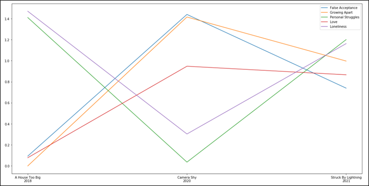

My Blog

Harnessing Data Science for Wildfire Management
Understanding how artificial intelligence can be leveraged to detect and predict wildfire spread within the United States.
Read More →
Rebuilding Coral Reefs with Data
Transforming coral reef restoration through predictive modeling and photomosaic technology.
Read More →
Exploring the Morality of Animal Testing
An examination of the ethical considerations surrounding animal testing in scientific research.
Read More →
Solving Ethical Dilemmas
An exploration of whether ethical dilemmas can be resolved in a socially acceptable manner.
Read More →

Evaluating Lyrics using NLP
Developing a model that analyzes song lyrics and themes using natural language processing.
Read More →Using AI and CGI in Music
Discussing how artificial intelligence is revolutionizing the way we perceive music.
Read More →
Understanding Bias in AI
Acknowledging biases in artificial intelligence algorithms and practices.
Read More →AI Roadmap for High School Students
Framing a college roadmap for high school students interested in artificial intelligence.
Read More →